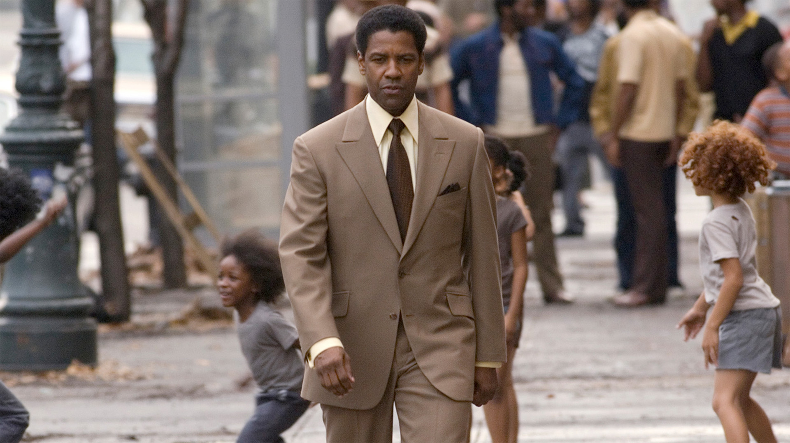
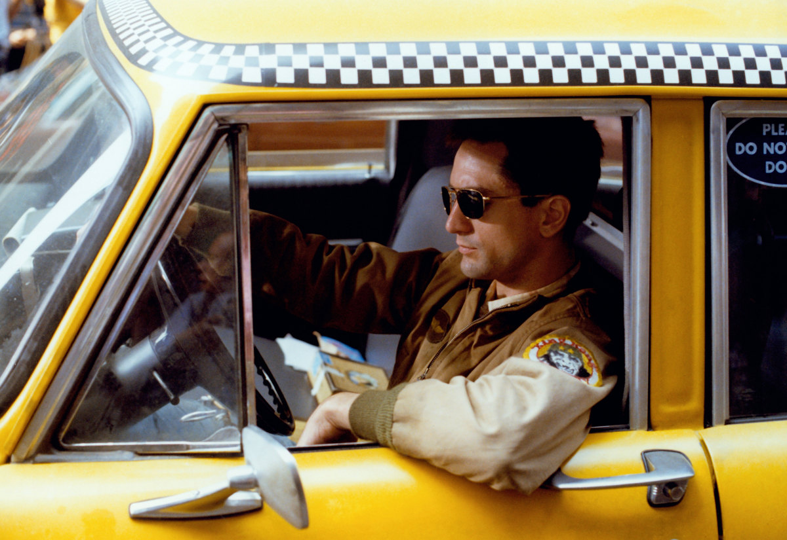

Любимые фильмы
Красный воробей
После вынужденного окончания карьеры из-за профессиональной травмы Доминика Егорова и ее мать сталкиваются с мрачным и неопределенным будущим. Героиня соглашается стать рекрутом в Школе Воробьев, секретной службе, которая обучает уникальных молодых людей использовать свое тело и ум в качестве опаснейшего оружия. После долгого садистского обучения девушка превращается в самого опасного Воробья за всю историю секретной службы. Теперь бывшая балерина должна примирить в себе человека, которым она была, и силу, которой она овладела, со своей собственной жизнью и жизнью всех, кто ей дорог. В том числе, американского агента ЦРУ, пытающегося убедить ее, что он единственный человек, которому она может доверять.
Легенда
Фильм расскажет историю близнецов Реджи и Ронни Крэй, культовых фигур преступного мира Великобритании 1960-х. Братья возглавляли самую влиятельную бандитскую группировку Ист-Энда. В их послужном списке: вооруженные грабежи, рэкет, поджоги, покушения, убийства и собственный ночной клуб, куда доезжали даже голливудские знаменитости. Среди их жертв — криминальные авторитеты Джек МакВитти и Джордж Корнелл.

Гангстер
После смерти хозяина, Фрэнк Лукас, тихий водитель гарлемского преступного авторитета, решает создать собственную криминальную империю. Его специальность — героин, который он ввозит напрямую из Юго-Восточной Азии. Лукас считает себя бизнесменом и конкурирует с другими группировками по всем правилам рыночной экономики, предлагая более качественный продукт по более низкой цене. Зарабатывая миллион долларов в день и придерживаясь однажды установленных для себя правил игры, он становится идолом для всего Гарлема, но по следам Фрэнка уже идёт Ричи Робертс — редкий для Нью-Йорка образец честного полицейского, ненавидимого коллегами.

Таксист
Тусклый свет слепых фонарей, скелеты фабричных труб, задыхающихся в собственном дыму. Вавилонские башни небоскребов, все это — ад Нового времени, Нью-Йорк. Ветеран вьетнамской войны Трэйвис Бикл ведет свое одинокое такси по ночным улицам бесконечного города, и перед ним разворачивается мрачная панорама человеческих грехов. Как ветхозаветный пророк, он надеется, что однажды небеса пошлют на землю спасительный дождь, который очистит Нью-Йорк от вековой грязи. А когда умирает надежда, остается только ненависть. Огненный ливень обрушится на головы грешников. Таксист позаботится об этом.